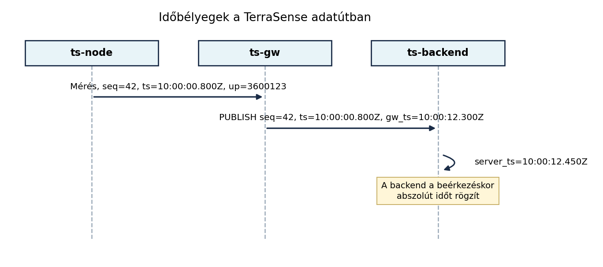

A TerraSense üvegházban a ts-node reggel 7:00-kor méri a
talajnedvességet, és a háttérrendszernek pontosan tudnia kell, mikor
nyitotta ki az öntözőszelepet. A mikrovezérlő órajele azonban nem
atomóra: egy olcsó, 20 ppm-es kvarc már naponta több mint másfél
másodpercet tévedhet, és a native_sim vagy egy valós kártya
kikapcsolás után nem őrzi meg a pontos időt. Ráadásul az adat útja a
rádiótól a gatewayen át a backendig késleltetésekkel terhelt, így az
„időbélyeg” önmagában nem egyértelmű. Ebben az alfejezetben megtervezzük
a TerraSense időkezelését: hogyan jelöljük az esemény bekövetkeztét,
hogyan szinkronizáljuk az órákat, és hogyan biztosítjuk a mérések helyes
sorrendjét akkor is, ha az üzenetek késve vagy átmenetileg elveszve
érkeznek.
Definíció. Az óraelcsúszás (clock drift) az a jelenség, amikor egy valós órajel frekvenciája a névlegestől eltér; mértékét ppm-ben (parts per million, milliomodrész) adják meg. Az eseményidő az az időpont, amikor a mérés vagy beavatkozás ténylegesen megtörtént; a feldolgozási idő az az időpont, amikor egy komponens (gateway, backend) az adatot fogadta; a monoton óra egy olyan időforrás, amely soha nem csökken, és független a rendszer valós idejű órájától, mert csak a felindulás óta eltelt időt méri.
Egy tipikus MCU, mint a Zephyr által támogatott ARM Cortex-M, gyakran
nem rendelkezik akkumulátoros RTC-vel (Real-Time Clock). Bekapcsoláskor
a belső számláló nulláról indul, és a rendszer csupán azt tudja, mennyi
ideje fut (uptime). A pontos abszolút időt hálózati
szinkronizációval kell megszerezni. A legegyszerűbb megoldás az
SNTP (Simple Network Time Protocol), az NTP (RFC 5905)
egyszerűsített kliense, amely UDP/123 porton kérdezi le a szervertől a
UTC-t. Az eszköz ritkán (pl. óránként vagy boot után) szinkronizál, mert
a rádió bekapcsolása energiát fogyaszt; a két szinkronizálás között az
óra a kvarc pontosságától függően driftel.
Az emberi hiba elkerülésére az UTC-t használjuk (nincs téli/nyári idő, nincs helyi időzóna), és minden időbélyeget ISO 8601 formátumban vagy epoch milliszekundumban (UTC) jelenítünk meg. A TerraSense konvenciója az epoch ms, ahogyan azt az Adatformátumok: JSON, CBOR, Protocol Buffers, SenML alfejezet rögzítette.
Az adatút során háromféle időbélyeg keletkezhet:
| Időbélyeg típus | Ki állítja elő? | Jellemzője |
|---|---|---|
Eszközidő (ts) |
ts-node |
Az esemény tényleges időpontja; pontatlan, ha az óra még nem szinkronizált, de a legközelebb áll az igazsághoz |
Gateway-idő (gw_ts) |
ts-gw |
Az üzenet fogadásának időpontja a gatewayen; pontosabb, de magában foglalja a rádiós késleltetést |
Szerveridő (server_ts) |
ts-backend |
Az üzenet beérkezésének időpontja a backendben; a legmegbízhatóbb, de a legtávolabb van az eseménytől |
Definíció. A relatív időbélyeg az
esemény időpontja az eszköz monoton órája szerint (uptime
milliszekundumban), amelyet a gateway vagy a backend abszolút idővé
számíthat vissza, ha ismeri az eszköz rendszerindítási idejét (pl. egy
korábbi szinkronizációból vagy a gateway boot_time
nyilvántartásából):
.
A sorrend egyértelműsítésére a seq (sequence number)
monoton növekvő sorszám szolgál. Még ha két mérés időbélyege azonos vagy
az óra visszaáll (pl. újraindulás után), a seq megadja,
melyik üzenet keletkezett korábban. A seq a
ts-node által, bootonként 0-tól indul, és minden sikeresen
elküldött üzenetnél eggyel nő; a gateway és a backend a seq
alapján ismeri fel a duplikátumot vagy a hiányt.
A következő diagram a TerraSense tipikus adatútját mutatja a három időbélyeggel:

Az ábrán a ts-node a mérés pillanatában a saját órája
szerinti abszolút időbélyeget (ts), a belső uptime-ját
(up=3600123 ms) és a seq=42 sorszámot küldi. A
ts-gw hozzáteszi a saját fogadási időpontját
(gw_ts), majd a ts-backend a beérkezéskor
elmenti a szerveridőt (server_ts). A későbbi feldolgozás
során az eseményidő az üzenet ts mezője, ha az
eszköz már szinkronizált; különben a gw_ts (vagy a
server_ts) használandó, de ezt a Ingest: MQTT-ből a backendbe, idempotensen és a Store-and-forward: offline működés és visszatöltés
alfejezetek pontosítják.
Az időforrás kiválasztása az energia, a pontosság és a rendelkezésre álló hardver függvénye:
| Időforrás | Pontosság | Energiaigény | Használat a TerraSense-ben |
|---|---|---|---|
| Belső kvarc, nincs szinkron | 10–100 ppm, naponta több másodperc hiba | minimális | Alapértelmezett a költségtakarékos csomópontoknál |
| SNTP/NTP szinkron | néhány ms–s a hálózati késleltetéstől függően | rádióhasználat miatt közepes | A ts-node ritkán (pl. boot után) szinkronizál; a
ts-gw folyamatosan NTP-t futtat |
| RTC külső kristállyal | néhány ppm, de akkumulátort igényel | nagyon alacsony | Opcionális, drágább hardvereken |
| Gateway-idő | 1 ms alatt a helyi RTC-ből | nem terheli az eszközt | Minden továbbított üzenetre rákerül |
| Szerveridő | ms-os pontosság a fogadási oldalon | nem terheli az eszközt | A backend mindig feljegyzi |
A döntési szabály: a pontos eseményidőhöz először próbáljuk
az eszközidőt használni, de csak akkor, ha az eszköz órája
szinkronizált. Ha ez nem elérhető vagy megbízhatatlan, akkor a
gateway-idő a másodlagos, a szerveridő
pedig a végső tartalék. A seq minden esetben kötelező, mert
a sorrendet és az esetleges duplikátumokat ez alapján lehet eldönteni,
függetlenül az órák pontosságától.
Tegyük fel, hogy a ts-node órája 20 ppm-es kvarcon fut,
és a gateway állandóan pontos NTP-szinkronnal rendelkezik. A mérés
2025-01-15 10:00:00 UTC-kor történik, de az eszköz órája az utolsó
szinkronizálás óta 0,8 másodpercet siet. A ts-node ezért
ts=2025-01-15T10:00:00.800Z-t, seq=42-t és
uptime=3600123 ms-ot küld. A ts-gw a
fogadáskor hozzáadja a saját
gw_ts=2025-01-15T10:00:12.300Z-t (a rádiós átvitel és a
gateway sorban állása 12,3 s késést okozott). A backendben a beérkezés
ideje server_ts=2025-01-15T10:00:12.450Z. A backend a
ts és a gw_ts különbségéből (11,5 s) csak azt
látja, hogy az eszközidő legfeljebb ennyivel tér el a gateway-időtől; a
0,8 s-os siettetést önmagában nem tudja elkülöníteni a késéstől, és a
seq=41, seq=42 időbélyegeinek 10 s-os
különbsége sem mutat ki állandó eltolást. Az eszköz órahibáját ezért a
szinkronizáláskor mérjük: a következő SNTP/gateway-szinkron az eszköz
órájához képest 0,8 s-os offsetet ad; ezt a
ts_source/unc mezővel együtt rögzítjük, a már
tárolt eseményeket pedig nem írjuk át. Ha a |ts − gw_ts|
nagyobb egy küszöbnél (például 5 s + a tipikus átviteli késés), a
ts nem megbízható: a gw_ts-t használjuk
eseményidőnek, és riasztást adunk az óra újrakalibrálására.
Ez a példa bemutatja a továbbvitt konvenciót: -
Eseményidő: az ts mező, epoch ms UTC-ben;
ha hiányzik vagy érvénytelen, a gw_ts lép a helyébe. -
Sorszám: a seq mező,
uint32_t, monoton növekvő, bootonként újraindulhat, de a
gateway és a backend párosítja a seq-et a node
azonosítójával, és észleli a nem monoton vagy hiányzó értékeket. -
Boot azonosító: opcionálisan a boot_id
mező, amely megkülönbözteti az eszköz újraindulásait, így a
seq újraindulását is.
ts-node-banMunkakönyvtár: ~/iot-labor/i034. Hozzuk
létre, majd a következő Zephyr native_sim alkalmazást
valósítjuk meg, amely bemutatja a relatív időbélyeg és a sorszám
használatát.
mkdir -p ~/iot-labor/i034 && cd ~/iot-labor/i034Hozzuk létre a CMakeLists.txt fájlt:
cmake_minimum_required(VERSION 3.20)
find_package(Zephyr REQUIRED HINTS $ENV{ZEPHYR_BASE})
project(ts_node_time)
target_sources(app PRIVATE src/main.c)A prj.conf fájl:
CONFIG_SYS_CLOCK_TICKS_PER_SEC=1000
CONFIG_PRINTK=y
CONFIG_CBPRINTF_FULL_INTEGRAL=yA src/main.c fájlban két szál fut: a mérőszál
periodikusan „mérést” végez, és növeli a seq-et, a
ts mezőt pedig a 64 bites k_uptime_get() és a
legutóbbi szinkronizáció alapján számolja. Szinkronizáció előtt a
ts értéke nem hamis epoch 0, hanem n/a, és a
ts_source mező jelzi, hogy a relatív uptime áll
rendelkezésre.
#include <zephyr/kernel.h>
#include <zephyr/sys/printk.h>
#include <stdbool.h>
#include <stdint.h>
#define SENSOR_STACK_SIZE 1024
#define MIN_VALID_EPOCH_MS 1577836800000LL /* 2020-01-01 UTC */
K_THREAD_STACK_DEFINE(sensor_thread_stack, SENSOR_STACK_SIZE);
static struct k_thread sensor_thread_data;
static uint32_t seq;
static uint32_t boot_id = 0x5EED0001u; /* szimulált; élesben RNG/RTC */
static bool clock_synced;
static int64_t sync_uptime_ms;
static int64_t sync_epoch_ms;
static int64_t sync_uncertainty_ms;
static bool sync_with_gateway(int64_t gateway_epoch_ms,
int64_t gateway_uptime_ms,
int64_t rtt_ms) {
if (gateway_epoch_ms < MIN_VALID_EPOCH_MS) {
printk("sync rejected: invalid epoch=%lld\n",
(long long)gateway_epoch_ms);
return false;
}
if (gateway_uptime_ms < 0 || gateway_uptime_ms > k_uptime_get()) {
printk("sync rejected: invalid uptime=%lld\n",
(long long)gateway_uptime_ms);
return false;
}
if (rtt_ms < 0 || rtt_ms > 5000) {
printk("sync rejected: invalid rtt=%lld\n", (long long)rtt_ms);
return false;
}
sync_epoch_ms = gateway_epoch_ms;
sync_uptime_ms = gateway_uptime_ms;
sync_uncertainty_ms = rtt_ms / 2;
clock_synced = true;
return true;
}
void sensor_thread(void *arg1, void *arg2, void *arg3) {
(void)arg1;
(void)arg2;
(void)arg3;
while (1) {
int64_t uptime_ms = k_uptime_get();
uint32_t temp_x10 = 225u + (seq % 10u);
uint32_t hum_x10 = 550u + (seq % 5u) * 5u;
if (!clock_synced && seq == 3u) {
if (sync_with_gateway(1735689600000LL, uptime_ms, 4)) {
printk("clock synced at uptime_ms=%lld\n",
(long long)uptime_ms);
}
}
if (clock_synced) {
int64_t event_ms = sync_epoch_ms + (uptime_ms - sync_uptime_ms);
printk("seq=%u boot=%08x src=device ts=%lld up=%lld unc=%lld "
"temp=%u.%u hum=%u.%u\n",
seq, (unsigned int)boot_id, (long long)event_ms,
(long long)uptime_ms, (long long)sync_uncertainty_ms,
temp_x10 / 10u, temp_x10 % 10u,
hum_x10 / 10u, hum_x10 % 10u);
} else {
printk("seq=%u boot=%08x src=uptime ts=n/a up=%lld "
"temp=%u.%u hum=%u.%u\n",
seq, (unsigned int)boot_id, (long long)uptime_ms,
temp_x10 / 10u, temp_x10 % 10u,
hum_x10 / 10u, hum_x10 % 10u);
}
seq++;
k_msleep(1000);
}
}
int main(void) {
printk("ts-node time example\n");
k_thread_create(&sensor_thread_data, sensor_thread_stack,
K_THREAD_STACK_SIZEOF(sensor_thread_stack),
sensor_thread, NULL, NULL, NULL,
K_PRIO_PREEMPT(5), 0, K_NO_WAIT);
return 0;
}A K_THREAD_STACK_DEFINE egy 1024 bájtos, statikusan
foglalt vermet hoz létre, a
struct k_thread sensor_thread_data pedig a szál
vezérlőblokkja; a k_thread_create mindkettőt megkapja. A
CONFIG_CBPRINTF_FULL_INTEGRAL=y teszi lehetővé, hogy a
printk a 64 bites %lld értékeket is helyesen
jelentse meg; e nélkül a formázás csonkolhat. A 64 bites
k_uptime_get() nem fordul körbe 49,7 nap után, mint a
k_uptime_get_32(). A sync_with_gateway csak
érvényes epochot és a jelenlegi uptime-nál nem nagyobb gateway-uptime-ot
fogad el; a szinkronizáció tényét külön clock_synced jelző
tárolja, így a szinkronizálatlan induló állapot nem jelenik meg epoch
0-ként. A szinkronizáció után az eseményidő
,
amely a kvarc driftje miatt a szinkronizáció óta eltelt idővel arányosan
bizonytalanabb lesz. A példában a 4 ms-os round-trip fele, azaz 2 ms
kerül a sync_uncertainty_ms mezőbe és az unc
kimenetre; valós SNTP-nél a négy időbélyegből számolt offset hibája
legfeljebb a round-trip késleltetés fele, amelyet az eseményidő mellett
kell tárolni, és a fogadási időtől külön kell kezelni. A gateway
gw_ts és a backend server_ts továbbra is külön
mező; a ts_source=device csak a szinkronizált eszközidőre
utal. A boot_id minden újraindulásnál változik, ezért a
(node_id, boot_id, seq) hármas akkor sem ütközik, ha a
seq nulláról indul újra. A példában a szinkronizáció
ugyanabban a szálban történik; külön szinkronizáló szál esetén a
clock_synced, sync_epoch_ms és
sync_uptime_ms együttes olvasását mutexszel vagy atomi
pillanatképpel kell védeni.
Build és futtatás:
west build -b native_sim . -d build
./build/zephyr/zephyr.exeIllusztratív kimenet (a pontos uptime-értékek a szimulátor ütemezésétől függnek; a programot a lektor nem futtatta):
ts-node time example
seq=0 boot=5eed0001 src=uptime ts=n/a up=0 temp=22.5 hum=55.0
seq=1 boot=5eed0001 src=uptime ts=n/a up=1000 temp=22.6 hum=55.5
seq=2 boot=5eed0001 src=uptime ts=n/a up=2000 temp=22.7 hum=56.0
clock synced at uptime_ms=3000
seq=3 boot=5eed0001 src=device ts=1735689600000 up=3000 unc=2 temp=22.8 hum=56.5
seq=4 boot=5eed0001 src=device ts=1735689601000 up=4000 unc=2 temp=22.9 hum=57.0
...Látható, hogy szinkronizáció előtt a ts nem hamis epoch,
hanem n/a, miközben az up (uptime) monoton nő;
a szinkronizáció után a ts a 64 bites uptime és a rögzített
offset különbségéből számolódik, a boot az újraindítási
sorozatot azonosítja. A seq minden mérésnél növekszik. Ez a
hármas (boot_id, seq, eseményidő) elegendő
ahhoz, hogy a gateway vagy a backend akkor is azonosítsa a sorrendet, ha
az abszolút idő bizonytalan. Továbbvitt eredmény. A
boot_id és a seq konvenció kerül be a
telemetria-üzenet sémájába, és a Store-and-forward:
offline működés és visszatöltés alfejezet az újraküldés során erre
az azonosítóra támaszkodik; a Idősoros adatbázisok
és adatmodellezés alfejezet a TimescaleDB táblába ezt a
seq mezőt is elmenti.
A laborban futtassuk a programot 10 másodpercig, és ellenőrizzük,
hogy a seq és az uptime_ms értékek szigorúan
monoton növekednek. A native_sim időalapja a host órájára
támaszkodik, így a lépésköz 1000 ms ± néhány ms pontossággal megjelenik;
valós hardveren a drift méréséhez külső időforrásra van szükség.
Tipikus hibakeresési táblázat:
| Hibatünet | Lehetséges ok | Javítás |
|---|---|---|
A seq nem monoton növekvő |
Az eszköz újraindult, és a számláló nulláról indult | Adjunk hozzá boot_id mezőt, és a gateway/backend a
(node_id, boot_id, seq) hármast használja a sorrendhez |
Az up érték ugrik vagy visszaáll |
A szál újraindult, vagy régi kódban a k_uptime_get_32()
túlcsordult |
Használjunk 64 bites k_uptime_get()-et; az újraindulást
a boot_id különbözteti meg |
A ts tartósan n/a |
A szinkronizáció elmaradt, vagy érvénytelen epochot/RTT-t kapott | Ellenőrizzük a gateway epochját és a round-trip késleltetést;
szinkronizációig a gateway gw_ts-t használjuk |
| Az eseményidő új szinkronizáció után visszaugrik | Az új offset kisebb a korábbinál; a már tárolt eseményeket nem szabad átírni | Tároljuk külön az esemény- és fogadási időt, a sorrendhez a
(boot_id, seq)-et használjuk, és őrizzük meg a
ts_source/bizonytalanság mezőt |
A ts mező abszolút időt tartalmaz, de helytelen
időzónát |
Az eszköz helyi időt küldött | Kötelező az UTC; az eszközön ne tároljunk időzónát, a konverziót a backend végezze |
A gateway gw_ts és a backend server_ts
között nagy a késés |
A broker bemeneti sora túlterhelt | Figyeljük a broker queue hosszát, és a backend skálázásával csökkentsük a feldolgozási időt; a mező puszta jelenléte nem okoz hibát, de a riasztásoknál figyelembe kell venni |
ts-node a beépített RTC-ből helyi időt olvas, a nyári/téli
időszámítás váltásakor az időbélyegek kétértelművé vagy hibássá válnak.
Mindig UTC-t használjunk, és a megjelenítéskor alakítsuk a felhasználó
időzónájára.seq hiánya és az időre hagyatkozás a
sorrendhez. Ha két mérés ugyanabban a milliszekundumban
történik, vagy az óra visszaállítása miatt az időbélyeg csökken, a
backend nem tudja eldönteni a sorrendet. A monoton sorszám (és
opcionálisan a boot_id) kötelező.ts mező értéke 0
vagy az 1970-es epoch, ami hamis riasztásokat okoz. Ilyenkor a
ts legyen n/a vagy hiányzó, az esemény monoton
uptime-ját külön mezőben küldjük, és a gateway a fogadáskor
gw_ts-t pecsétel.k_uptime_get() a rendszer indulásától eltelt időt adja, nem
az epoch időt. A két fogalom nem helyettesíthető: a sorrendhez a
monoton, a rögzített eseményidőhöz a valós (szinkronizált) idő
kell.ts-node órája 3 másodpercet késik a gatewayhez képest, és a
mérési periódus 60 másodperc? Indokolja a választ.sensor_thread
függvényét úgy, hogy a ts mező a legutóbbi szinkronizációs
offset segítségével számított epoch_ms UTC legyen,
szinkronizáció előtt pedig n/a. A kiíratásban jelenjen meg
az esemény abszolút és monoton ideje, a szinkronizáció bizonytalansága
(uncertainty_ms), valamint a gateway fogadási ideje
(gw_ts) külön mezőben.seq értékek 0, 1,
2, 3, 0, 1, 2… szekvenciát mutatnak ugyanattól a
node_id-től. Mi lehet a probléma, és hogyan javítaná?A backend a ts mezőt használja, ha az eszköz órája
szinkronizált (ts_source=device), és a mért eltérés a
rendszerben rögzített küszöb (a kidolgozott példában 5 s) alatt van. A 3
s < 5 s, tehát a ts marad, a unc mező 3
s-os bizonytalanságot jelez, és a rendszer óra-újraszinkront kér. Ha az
eltérés a küszöb fölé nőne, a gw_ts-t kell választani, mert
az eszközidő már megbízhatatlan. A sorrendet a mintavételi periódustól
függetlenül a (boot_id, seq) adja.
Az óra elcsúszása havonta: Tehát egy hónap alatt legfeljebb 77,76 s eltérés halmozódhat fel: ha az oszcillátor lassabb a névlegesnél, az óra ennyit késik, ha gyorsabb, ennyit siet.
A labor megoldásában a ts csak érvényes
szinkronizáció után epoch; a lényeges részek:
#define MIN_VALID_EPOCH_MS 1577836800000LL /* 2020-01-01 UTC */
#define DRIFT_PPM 20
static bool clock_synced;
static int64_t sync_epoch_ms;
static int64_t sync_uptime_ms;
static int64_t sync_uncertainty_ms;
static uint32_t boot_id = 0x5EED0001u;
static uint32_t seq;
bool sync_with_gateway(int64_t gateway_epoch_ms,
int64_t gateway_uptime_ms,
int64_t rtt_ms) {
if (gateway_epoch_ms < MIN_VALID_EPOCH_MS ||
gateway_uptime_ms < 0 ||
gateway_uptime_ms > k_uptime_get() ||
rtt_ms < 0 || rtt_ms > 5000) {
clock_synced = false;
return false;
}
sync_epoch_ms = gateway_epoch_ms;
sync_uptime_ms = gateway_uptime_ms;
sync_uncertainty_ms = rtt_ms / 2;
clock_synced = true;
return true;
}
void sensor_thread(void *arg1, void *arg2, void *arg3) {
(void)arg1; (void)arg2; (void)arg3;
while (1) {
int64_t uptime_ms = k_uptime_get();
if (clock_synced) {
int64_t elapsed_ms = uptime_ms - sync_uptime_ms;
int64_t event_epoch_ms = sync_epoch_ms + elapsed_ms;
int64_t uncertainty_ms = sync_uncertainty_ms +
(elapsed_ms / 1000) * DRIFT_PPM / 1000;
printk("seq=%u boot=%08x ts=%lld up=%lld unc=%lld\n",
seq, (unsigned int)boot_id,
(long long)event_epoch_ms, (long long)uptime_ms,
(long long)uncertainty_ms);
} else {
printk("seq=%u boot=%08x ts=n/a up=%lld\n",
seq, (unsigned int)boot_id, (long long)uptime_ms);
}
seq++;
k_msleep(1000);
}
}Az event_epoch_ms az esemény ideje; a gateway a
fogadáskor ettől független gw_ts mezőt, a backend a
server_ts mezőt rögzíti. Az uncertainty_ms a
szinkronizációs offset hibájából (legfeljebb RTT/2) és a szinkronizáció
óta eltelt idő driftjéből adódik. A boot_id a
seq újraindulását különíti el; a már tárolt eseményeket egy
újabb szinkronizáció nem írja át, a sorrendet a
(boot_id, seq) adja. A szinkronizáció indítása történhet a
main-ből vagy külön szálból; külön szál esetén a közös
offsetet mutexszel vagy atomi pillanatképpel kell védeni.
A seq újraindulása azt jelzi, hogy az eszköz
újraindult (pl. watchdog, áramkimaradás), és a sorszám számláló
lenullázódott. A backend ezt az (node_id, seq) párosban
észleli, és ha a seq hirtelen kisebb lesz, mint az előző,
újraindulást feltételez. A javítás: az üzenetbe foglaljunk
boot_id mezőt (pl. a boot időbélyege vagy egy véletlen
szám), és a backend a (node_id, boot_id, seq) hármas
alapján azonosítsa a sorozatot. Az újraindulás után a
boot_id változik, így a seq újraindulása nem
okoz hamis duplikátum- vagy hiányérzékelést.
Az alfejezet bevezette az IoT-rendszerek időkezelési alapjait: az
óraelcsúszást (ppm), az SNTP/NTP-szinkronizációt, az eseményidő és a
feldolgozási idő különbségét, valamint a relatív időbélyeg
visszaszámítását. A TerraSense stratégiája három időbélyegre épül: az
eszköz ts mezője (epoch ms UTC, ha az óra szinkronizált;
egyébként n/a, és az esemény monoton uptime-ja külön
mezőben utazik), a gateway gw_ts mezője, és a backend
server_ts mezője. A sorrendet a monoton növekvő
seq sorszám és opcionálisan a boot_id
biztosítja. A labor egy native_sim Zephyr-alkalmazást mutat
be, amely a 64 bites k_uptime_get(), a
clock_synced jelző, a boot_id és a
seq használatával generál időbélyegzett telemetriát;
szinkronizáció előtt a ts értéke n/a, a
fogadási idő pedig külön gw_ts/server_ts mező
marad. Továbbvitt eredmény. Az eseményidő
(ts) és a sorszám (seq) mezőket, valamint a
boot_id kiegészítést használja a Store-and-forward: offline működés és visszatöltés
az újraküldések deduplikálására, az Idősoros
adatbázisok és adatmodellezés a TimescaleDB sémában, és a Eseményvezérelt feldolgozás: Kafka és a kézbesítési
szemantika az üzenetek sorrendjének és idempotenciájának
biztosítására.
k_uptime_get,
k_uptime_get_32), valamint a
CONFIG_CBPRINTF_FULL_INTEGRAL beállítás a 64 bites
%lld formázáshoz.native_sim board időzítési viselkedése.native_sim időbázisának pontossága a
telepített Zephyr-verzióban. A labort a lektor nem futtatta; a kód
statikusan ellenőrzött, a 64 bites k_uptime_get() és a
printk %lld támogatása a Zephyr 3.7.0
dokumentációján alapul. A k_uptime_get_32 32 bites felső
határa miatt 49,7 naponként túlcsordul, ezért a labor 64 bites
változatot használ; a 10 másodperces futás a túlcsordulást nem mutatná
meg.